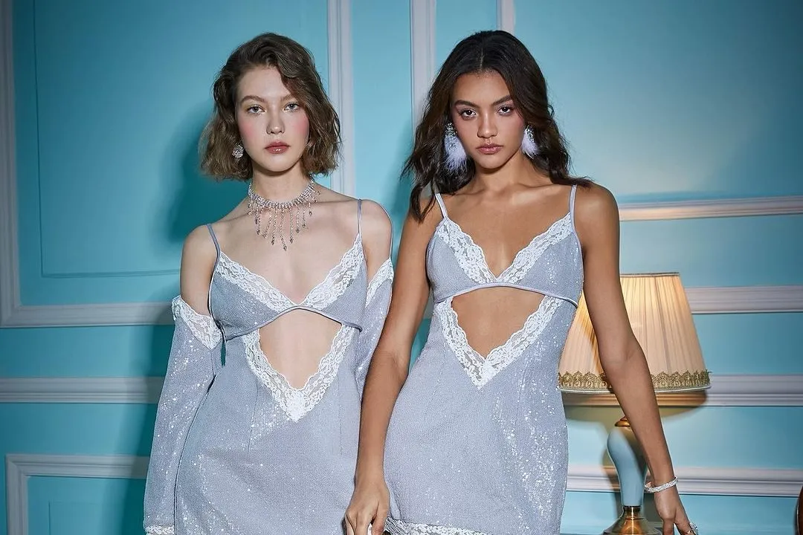
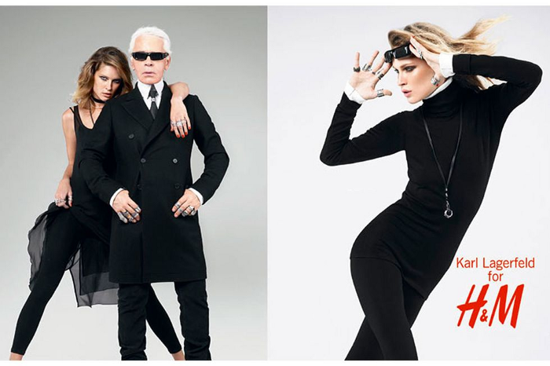
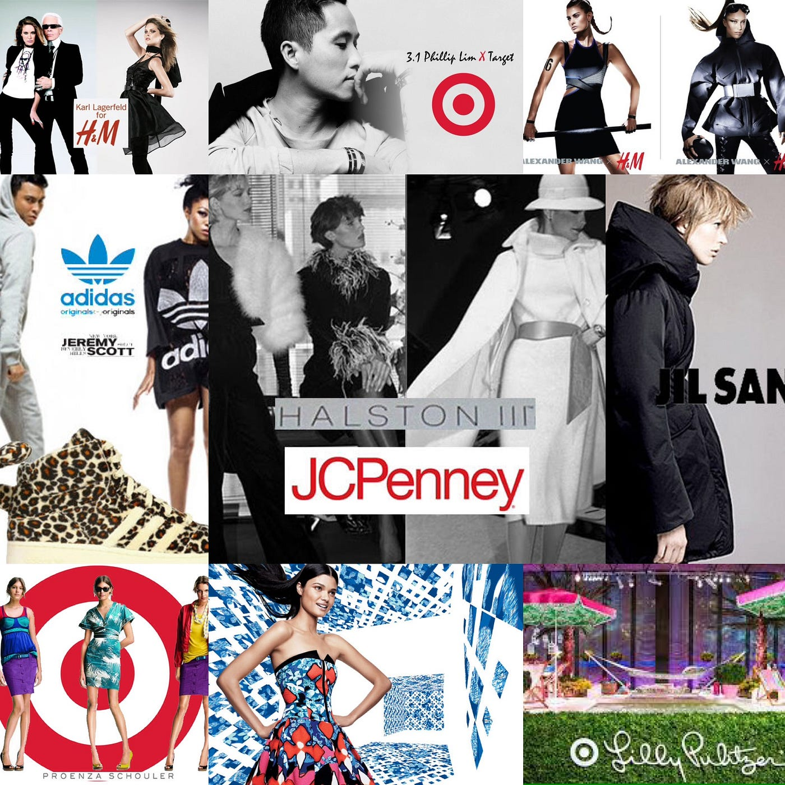
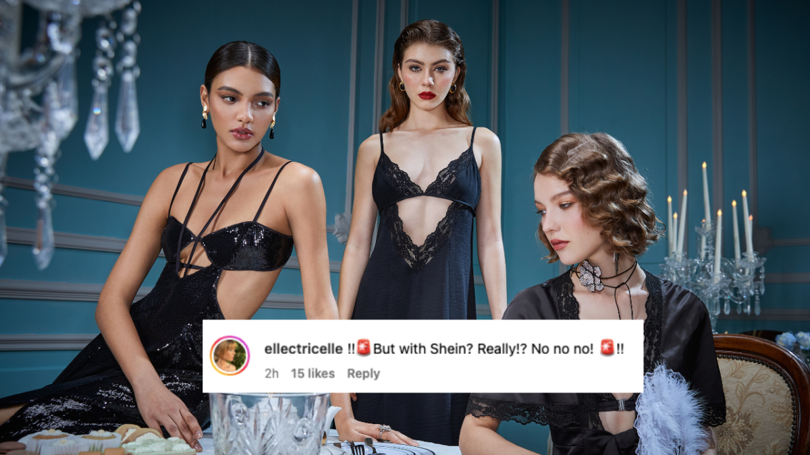

Alice McCall Trades Runway for SHEIN

In a move that has sent ripples through the high-end fashion Australian designer Alice McCall's venture into a collaboration with fast fashion giant SHEIN has sparked well, concern. This decision comes just months after McCall's own brand faced financial difficulties, a casualty of the COVID-19 pandemic's relentless impact.
- This alliance echoes a trend that's been shaping the fashion landscape for nearly two decades. In 2004, H&M, a titan of fast fashion, made a groundbreaking move by partnering with Karl Lagerfeld. This marked the beginning of a new era, where luxury met mass-market in an unexpected fusion. Following this, names like Stella McCartney, Versace, and Alexander Wang also graced H&M's collections, creating a buzz that transformed skepticism into a successful marketing blueprint.
- These collaborations, initially seen as risky, potentially diluting the exclusivity of luxury brands, have now been flipped on their head. They're celebrated as ingenious strategies, blending the allure of high fashion with the accessibility of fast fashion. Yet, almost two decades later, questions surface: Has the novelty worn off? Are we witnessing a saturation point in these once "thrilling" partnerships?
- The case of Alice McCall and SHEIN brings a unique angle to this narrative. By this point we are aware of fast fashion’s impact. Fans of McCall, known for her dedication to quality and craftsmanship, have voiced their dismay, seeing this collaboration as a tarnishing of the brand's ethos. They're not just worried about brand dilution; they're concerned about the bigger picture – the environmental and ethical implications of partnering with a brand like SHEIN, notorious for its rapid production model and the questions it raises in sustainable fashion circles.
- This collaboration, therefore, isn't just about a high-end brand aligning with a fast fashion label; it's a reflection of a broader, more complex issue. It illustrates the ongoing tension between maintaining brand integrity and pursuing profitability in an increasingly ethically conscious consumer market.
- Alice McCall has responded in a since deleted instagram post on controversy, she insisted “did [her] due diligence” before entering into the collaboration, after former customers took to the brand’s official announcement to question whether it was “a joke”.
“Ensuring my garments have been made ethically is important to me which is why I did my due diligence before entering into this partnership,” the designer said.
“I’ve travelled to China and met with the SHEIN team. There, I was able to visit their operations and facilities where my collection is manufactured and they are up there with the best that I have worked with in my career.” - As the fashion world watches this partnership unfold, it becomes a poignant symbol of the industry's current crossroads. Will the legacy of luxury brands be redefined by these collaborations? Can the industry balance the allure of fast fashion with a genuine commitment to sustainability? The SHEIN x Alice McCall collaboration might not just be a poor business move; it could be a defining moment, a call for introspection in an industry grappling with its identity in an era demanding greater accountability and ethical consideration. One can hope.


